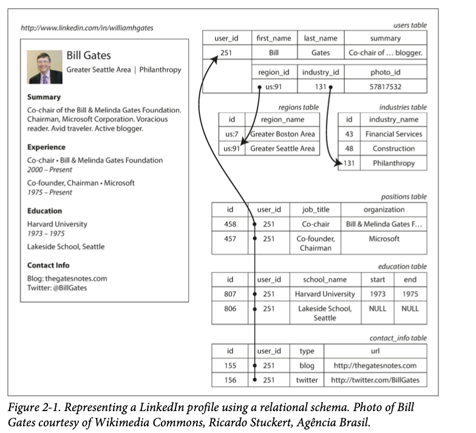

Chapter 2
The limits of my language mean the limits of my world.
我发现维特甘斯坦在 software 里面也特别出名…… 吴军老师也专门写过一篇文章来介绍他 可能这些人都喜欢哲学吧……
data model 可能是 software 里面最重要的元素了，因为它不仅决定我们如何写软件，还决定了我们如何 思考 我们有解决的一个问题 比如最短路问题就需要用 图 这种 data model 其他的 model 可能也能解决问题，但是不如图来的方便
Most app are built by layering one data model on top of another
其实这也是 abstraction 的一种体现，在每一个 layer 上面，关键的问题就是
how is it represented in terms of next-lower layer
比如 1. 在 app 层，我们把现实生活中的物品/对象抽象成一个能够表达他们的objects 或者数据结构就可以了。比如 social graph, 个人资料(age, sex, job, salary, etc) 以及能够 CRUD 这些数据的API 2. When store those data structures, you express them in terms of a general-purpose data model, such as JSON or XML documents, tables in a relational database, or a graph model. 3. DB 工程师则会设计如何把这些 JSON/XML/relational/graph 用 bytes 存在 memory, disk 上面，以及如何查询这些数据 4. 再往下一层，硬件工程师则考虑 how to represent bytes in terms of electrical currents, pulses of light, magnetic fields, and more.
In a complex application there may be more intermediary levels, such as APIs built upon APIs, but the basic idea is still the same: each layer hides the complexity of the layers below it by providing a clean data model.
network 也是这样的。Link layer 外面包一层network layer， 再是transport layer， 最后application layer
data model 就是现实的模型，然后从这里出发，json in data base, representing data in terms of bytes in memory, on disk or on a network. This representation may allow the data to be queried, searched, manipulated, and processed in various ways.
每一个 data model 都有自己的优势或者说不同场景下的好处，而且基于 data model 上面开发的工具有些事情就变的可能了(或者说用错了 data model 有些事情根本没法完成). 所以选择一个合适的 data model 就变得很重要了
这一章讨论了一系列通用的 data model 以及查询他们的语言 (query language) - relational model - document model - graph model
chapter 3 会讨论如何存储这些数据，也就是上面第3点
Relational Model vs Document Model¶
讲到 data model 不得不提 relational model， 是 Edgar Codd 在 1970 提出的概念
data is organized into relations (called tables in SQL), where each relation is an unordered collection of tuples (rows in SQL).
当时只是一个理论上的概念，不过后来1980年的时候 relational database management system (RDBMS) 以及 SQL 已经是开发者们的默认选项了
relational database 的根在 business data processing 也就是 1960-70年大型机在做的事情 (银行交易，航空公司定机票，仓储管理这类的), 以及 batch processing (customer invoicing, payroll, reporting).
The goal of the relational model was to hide that implementation detail behind a cleaner interface.
SQL 就是一层 abstraction，使用者不需要考虑输入 query 之后 database 是怎么完成这些任务的，当时其他的database 还需要 developer 来考虑如何存/查询数据
Object databases came and went again in the late 1980s and early 1990s. XML databases appeared in the early 2000s, but have only seen niche adoption. Each competitor to the relational model generated a lot of hype in its time, but it never lasted
这里的reference 讲了 data model 的历史, 就是在 noSQL 之前已经有很多不同种类的 data model 出现过了，但是最后 relational 活了下来，而且现在大部分的互联网app 还是在用 relational model (online publishing, discussion, social networking, ecommerce, games, software-as-a-service productivity applications, or much more)
Birth of NoSQL¶
这一段讲了 NoSQL 的历史，他并不代表一个单独的技术
it was originally intended simply as a catchy Twitter hashtag for a meetup on open source, distributed, nonrelational databases in 2009
你也可以理解成 Not Only SQL
Different applications have different requirements, and the best choice of technology for one use case may well be different from the best choice for another use case. It therefore seems likely that in the foreseeable future, relational databases will continue to be used alongside a broad variety of nonrelational datastores—an idea that is sometimes called polyglot persistence [3]
这概念在很多地方也提到过，就是一个 app 在用不同类型的 DB 一起serve 一个service，比如 redis 来做 cache， MySQL 来做 transaction, redshift/snowflake 来做 datalake 书里面这个 reference (Pramod J. Sadalage and Martin Fowler: NoSQL Distilled. Addison-Wesley) Martin Fowler 在啥都会？？OOD 也是他
Object-Relational mismatch¶
因为大多数的 language 都用 object oriented 的模式来写程序，但想要转换成 relational model 就需要 ORM 的帮助了 (因为你需要把 object.update 转换成 SQL 语句，ORM 则避免了这类的 boiler plate code)
ActiveRecord 没听说过，Hibernate 应该是 spring framework 里面用到的 library
书里面用到了 LinkedIn profile 来举例子，每个人的 profile 到可以用一个 unique identifier 来locate，user_id. first_name and last_name 就可以当作 column 放进 user table 里面了
但是有些属性不像名字一样一般只出现一次，比如你参加过的工作岗位，这种就会有多个 instance 了。以及不同学校的记录。这类 one-to-many 的 relation 通常有以下几种表达方式
- Put career positions, education, contact information into separate tables (传统方式)
- Add structured data type (XML, JSON) 在一个 column/attribute 上面 这样 query 的时候就可以一次查询多个值了 (MySQL, Oracle, DB2, SQL Server 支持这类的操作)
- Encode jobs, education, contact info as JSON or XML document and store it on a text column. 然后在 application 层 parse
relation row (userid, first name + last name, job)
像 resume 这种 self-contained document，JSON 这种格式可能更合适。MongoDB, RethinkDB, CouchDB, Espresso 这类的数据库就是基于 JSON 这种格式来存储数据的
{
"user_id": 251,
"first_name": "Bill",
"last_name": "Gates",
"summary": "Co-chair of the Bill & Melinda Gates... Active blogger.",
"region_id": "us:91",
"industry_id": 131,
"photo_url": "/p/7/000/253/05b/308dd6e.jpg",
"positions": [
{
"job_title": "Co-chair",
"organization": "Bill & Melinda Gates Foundation"
},
{
"job_title": "Co-founder, Chairman",
"organization": "Microsoft"
}
],
"education": [
{
"school_name": "Harvard University",
"start": 1973,
"end": 1975
},
{
"school_name": "Lakeside School, Seattle",
"start": null,
"end": null
}
],
"contact_info": {
"blog": "http://thegatesnotes.com",
"twitter": "http://twitter.com/BillGates"
}
}
JSON 看起来减少了 application code 跟 storage layer 之间的转换，但也不是绝对的(第四章会讲到)
JSON 这种格式相比于 relational model 有更好的 locality，他本质上是一个 tree structure，就好像 HTML 文件一样
 相比relational model 的 multiway join，JSON 只需要 tree traversal 就可以了
相比relational model 的 multiway join，JSON 只需要 tree traversal 就可以了
Many-To-one and Many-to-many relationships¶
在前面的例子里面，region_id 以及 industry_id 都是用 Id 而不是文字("大西雅图"， “哲学”) 来记录的。 为什么？
如果用户界面里面可以自由输入文字，那么直接用文字存储挺合理。但用 ID 有其他的好处， - Consistent style and spelling across profiles - Avoiding ambiguity - Ease of updating (这个地域的名字只存一个地方就好了，而且未来更改起来很方便) - Localization support （翻译的时候也方便） - Better search (Greater Seattle 可以存进 Washington state 里面)
用ID 存储本质上也是避免重复, 当我们存储的时候去掉重复内容的过程也叫做 normalization 去重复有很多好处, avoid write overheads, avoid inconsistencies etc
Literature on the relational model distinguishes several different normal forms, but the distinctions are of little practical interest. As a rule of thumb, if you’re duplicating values that could be stored in just one place, the schema is not normalized.
不幸的是， normalization 就需要 many to one relationships (many people live in one particular region, many people work in one particular industry) document model 在 many to one 这种relationship 就不是很灵活了
In relational database, it's normal to refer to rows in other tables by IDs, because joins are easy In document databases, joins are not needed for one-to-many tree structures, and support for joins is often weak.iii
不过现在好多 documentDB 支持 join 了 (MongoDB) 如果你用的数据库自己不支持 join，那你就要在 application 层自己实现join的逻辑。并且随着 application的进化，数据之间的 interconnection 也会越来越多
作者这里举了 resume 的例子，如果 organization 以及 school 也要当作一个 entities， 当它们自己成了 entities的时候，就不能像之前一样只存 string 了， organization, school could have its own web page (logo, news feed etc), 同样的，recommandation 也是需要一个用户的 recommender 能够通过 ID 找到 recommend 他的人 这里强调的还是 document 一开始在 resume 这里很适用，但是产品的变化可能也会改变你 对data model的选择
Are Document Databases Repeating history?¶
这一小节的内容介绍了 database 的历史，还是挺有意思的，可以看出历史是有一定的重复，但又不是简单的重复
这里需要介绍一下 relational model 当初就是为了解决 network model 没法 abstract query的问题
Relational vs Document Databases Today¶
如果要对 relational 和 document 数据库进行对比的话还是有很多不同的，包括 fault-tolerance properties (chapter 5) 以及 handling concurrency (chapter 7) 这一章集中讨论 difference in data model
Main arguments in document data model are schema flexibility, better performance due to locality and closer to data structures used by some app (resume example)
Relational model counters by providing better support for joins, many to one and many to many relationships
Which data model leads to simpler application code?¶
If data in your app has tree structure (tree of one to many relationships, where typically entire tree is loaded at once), then it's probably a good idea to use a document model.
the relational technique of shredding 
这其实也是之前提到的 normalization，这不过会造成app 层面的代码要更复杂一些 但 document model 也有局限，比如没法直接 reference 到 nested structure，而需要 tree traversal
The poor support for joins in document databases may or may not be a problem, depending on the application. For example, many-to-many relationships may never be needed in an analytics application that uses a document database to record which events occurred at which time
但如果你的app 有 many to many relationship, document 就没那么香了
Joins can be emulated in application code by making multiple requests to database, but that also moves complexity into the application and is usually slower than a join performed by specialized code inside the database.
有根据app 层面的需求来决定，不过大多数时候 relational 可能更合适…… 可能是我没见过 graph 的应用场景吧
For highly interconnected data, the document model is awkward, the relational model is acceptable, and graph models (see “Graph-Like Data Models” on page 49) are the most natural.
Schema flexibility in the document model¶
这里强调了 document databases 其实是 schema on read instead of schemaless schema on read means data is only interpreted when it is read.
In contrast, schema-on-write (relational databases) ensures all written data conforms to the schema
INSERT user_id "123"
SELECT * from user
WHERE id = 123
schema on read 就像 dynamic type language (python, javascript) 一样， schema on write 则像是 static (compile time) checking language (c, c++, java) 各有优势，没有对错
这里举了一个需要改 format 的例子，比如之前你是存fullname (last + first name), 现在则是要分开存。那么 document database可以直接开始写一个新的 field 然后在 application 层做一个判断就好了
if (user && user.name && !user.first_name) {
// old schema doesn't have `first_name` field
user.first_name = user.name.split(" ")[0];
}
而 "statically typed" schema 则需要做一次 migration
ALTER TABLE users ADD COLUMN first_name text;
UPDATE users SET first_name = split_part(name, ' ', 1); PostgreSQL
UPDATE users SET first_name = substring_index(name, ' ', 1); -- MySQL
schema on read 一般是用户可以随意添加新的 field 的时候比较好用，而 schema on write 则是在你已经知道一些 field 肯定会用到以及他们的格式的时候更好用。
in cases where all records are expected to have the same structure, schemas are a useful mechanism for documenting and enforcing that structure. We will discuss schemas and schema evolution in more detail in Chapter 4.
Data locality¶
document usually stored as a single string (JSON, XML). If your app require access to entire document (render it on web page), there is performance advantage. Because if data is split across multiple tables, additional lookups are required to retrieve it all, which may require more disk seeks and take more time
但如果你只需要 document 里面的一小部分，那么每次到 load 整个 document 就会造成浪费, 而且在 update 操作的时候，database 一般是把整个 string 重新写入，只有在你 document encoded size 不变的时候才能做到 inplace modification 这些情况也限制了 document model 的使用场景
data locality 不只是 document model 要考虑的，relational model 也同样需要。甚至你写代码的时候也需要考虑…… 经典 for (i) { for (j) } 而不是 for (j) {for (i)}
It’s worth pointing out that the idea of grouping related data together for locality is not limited to the document model. For example, Google’s Spanner database offers the same locality properties in a relational data model, by allowing the schema to declare that a table’s rows should be interleaved (nested) within a parent table [27]. Oracle allows the same, using a feature called multi-table index cluster tables [28]. The column-family concept in the Bigtable data model (used in Cassandra and HBase) has a similar purpose of managing locality [29].
29 这里的 paper 可以看一下 We will also see more on locality in Chapter 3.
Convergence of document and relational databases¶
做 database的肯定希望自家的产品能够提供更多的功能，所以 convergence 应该是必然会发生的趋势
Most relational database systems (other than MySQL) have supported XML since the mid-2000s. This includes functions to make local modifications to XML documents and the ability to index and query inside XML documents, which allows applications to use data models very similar to what they would do when using a document data‐ base.
PostgreSQL, MySQL, IBM DB2 页都支持 json. Document DB 那边也是逐渐开始支持 join 操作了
It seems that relational and document databases are becoming more similar over time, and that is a good thing: the data models complement each other. [^1]
[^1] Codd 在一开始提出 relational model 的时候其实也已经提到了 nested structure了
Codd’s original description of the relational model [1] actually allowed something quite similar to JSON documents within a relational schema. He called it nonsimple domains. The idea was that a value in a row doesn’t have to just be a primitive datatype like a number or a string, but could also be a nested relation (table)—so you can have an arbitrarily nested tree structure as a value, much like the JSON or XML support that was added to SQL over 30 years later.
Query Languages for Data¶
当 relational model 被提出的时候，SQL 也跟着被设计出来了。 SQL 就是查询数据用的一种语言，and this language is a declarative query language. 相对应 IMS and CODASYL queried the database using imperative code. What does that mean?
我们平时用到的 programming language 大部分都是 imperative language. For example
function getSharks() {
var sharks = [];
for (var i = 0; i < animals.length; i++) {
if (animals[i].family === "Sharks") {
sharks.push(animals[i]);
}
}
return sharks;
}
而 declarative language (functional programming) 则是
sharks = animals.filter( animal => animal.family === "Sharks");
relational model 是基于 relational algebra 定义的， $$ sharks = \sigma_{family = Sharks} (animals) $$ \(\sigma\) (sigma) 是 select operator 根据这个定义， SQL 就可以用
SELECT * FROM animals WHERE family = 'Sharks';
imperative 必须按照给定的步骤执行，declarative 则是你给出你想要的条件，但不需要给出 如何 实现这个操作， query 交给 database 去 optimize，function 交给 compiler 去 optimize
A declarative query language is attractive because it is typically more concise and easier to work with than an imperative API. But more importantly, it also hides implementation details of the database engine, which makes it possible for the database system to introduce performance improvements without requiring any changes to queries.
其实 programming language 也是一样的，这些 for loop 本身已经是一层 abstraction了，我们不需要考虑 assembly code, 交给 compiler 就行了，query language 也是一样的，交给 database query optimizer 就可以了
The SQL example doesn’t guarantee any particular ordering, and so it doesn’t mind if the order changes. But if the query is written as imperative code, the database can never be sure whether the code is relying on the ordering or not. The fact that SQL is more limited in functionality gives the database much more room for automatic optimizations.
还有一点好处就是 parallel execution
Finally, declarative languages often lend themselves to parallel execution. Today, CPUs are getting faster by adding more cores, not by running at significantly higher clock speeds than before
Declarative languages have a better chance of getting faster in parallel execution because they specify only the pattern of the results, not the algorithm that is used to determine the results. The database is free to use a parallel implementation of the query language, if appropriate 32 有兴趣的话这个reference 可以阅读
Declarative queries on the web¶
Declarative queries 不止存在于 database 里面，一个我们天天用到的软件也一样有 declarative query language: Browser
CSS is a declarative language
Imagine what life would be like if you had to use an imperative approach. In JavaScript, using the core Document Object Model (DOM) API, the result might look something like this:
看得出来 declarative language 灵活很多，而且 imperative language 还有以下几点问题 - 上面的代码会导致用户即使选了别的页面或者reload也不会清空 selected (需要加入 cursor 的纪录) CSS 则是可以让 browser 决定 - If you want to take advantage of a new API, such asvar liElements = document.getElementsByTagName("li"); for (var i = 0; i < liElements.length; i++) { if (liElements[i].className === "selected") { var children = liElements[i].childNodes; for (var j = 0; j < children.length; j++) { var child = children[j]; if (child.nodeType === Node.ELEMENT_NODE && child.tagName === "P") { child.setAttribute("style", "background-color: blue"); } } } }document.getElementsBy ClassName("selected")or evendocument.evaluate()—which may improve performance—you have to rewrite the code. On the other hand, browser vendors can improve the performance of CSS and XPath without breaking compatibility.
database 也是一样的，你不用考虑 SQL 背后是如何优化的，你只要知道每次这个 SQL 的结果是一样的就可以，而 database vendor 可以随便进行后台的优化
MapReduce Querying¶
这里简短介绍了一下 MapReduce. MapReduce is a programming model for processing large amount of data from Google 其实只要涉及到 large data 总会提到 MapReduce Chapter 10 会详细介绍 MapReduce，因为 derive data 基本都多多少少收到它的影响
MapReduce is neither a declarative query language nor a fully imperative query API, but somewhere in between: the logic of the query is expressed with snippets of code, which are called repeatedly by the processing framework.
It is based on map(aka collect) and reduce(aka fold or inject) functions in functional programming language
举个例子，假如你是一个海洋生物学家，你每次观察一个海洋生物的时候都会把这个观察记录加入到你的 database 里面。现在你想要生成一个每月观察到鲨鱼的report
SELECT date_trunc('month', observation_timestamp) AS observation_month, sum(num_animals) AS total_animals
FROM observations
WHERE family = 'Sharks' GROUP BY observation_month;
{
observationTimestamp: Date.parse("Mon, 25 Dec 1995 12:34:56 GMT"),
family: "Sharks",
species: "Carcharodon carcharias",
numAnimals: 3
},
{
observationTimestamp: Date.parse("Tue, 12 Dec 1995 16:17:18 GMT"),
family: "Sharks",
species: "Carcharias taurus",
numAnimals: 4
}
then map will be called once for each document resulting
emit("1995-12", 3)
emit("1995-12", 4)
reduce function will be called with
reduce("1995-12", [3,4])
map and reduce function must be pure function, meaning no side effects. This allow these function to be run anywhere and in any order and rerun them on failure
MapReduce is just a way of generating derived data (part 3). Higher level query languages like SQL can be implemented as a pipeline of MapReduce operations (Chapter 10)
There are many implementations of SQL that don't use MapReduce (in fact MapReduce is probably outdated now, Spark and other framework are being used)
Graph like Data models¶
其实 relational 也可以 represent graph，只不过不是特别方便让人在脑子里形成一个画面 或者说当你的 application many to many relationships 变得很复杂的时候，graph model is easier to reason about
graph consists of 2 kinds of object: vertices (aka nodes or entities) and edges (aka relationships or arcs) Many type of data can be model as a graph - Social graph - Web graph - Road rail networks (or just networks)
Well-known algorithms can operate on these graphs: for example, car navigation sys‐ tems search for the shortest path between two points in a road network, and PageRank can be used on the web graph to determine the popularity of a web page and thus its ranking in search results.
bfs,dfs, disjktra, min span tree etc
graphs are not limited to such homogeneous data: an equally powerful use of graphs is to provide a consistent way of storing completely different types of objects in a single datastore.
Facebook maintains a single graph with many different types of vertices and edges: vertices represent people, locations, events, checkins, and comments made by users; edges indicate which people are friends with each other, which checkin happened in which location, who commented on which post, who attended which event, and so on 35
This section talked about property graph model (Neo4j, Titan, InfiniteGraph) and triple store model (Datomic, AllegroGraph, etc) and 3 declarative query languages for graphs: Cypher, SPARQL, and Datalog.
Property Graphs¶
vertex (nodes) consists of - Unique ID - A set of outgoing edges - A set of incoming edges - A collection of properties (kv pairs) Each edge consists of - Unique ID - Vertex(node) at which the edge starts - vertex at which the edge ends - A label describe the relationship between two nodes - A collection of properties (kv pair) relational model representation of graph
CREATE TABLE vertices (
vertex_id integer PRIMARYKEY,
properties json
);
CREATE TABLE edges (
edge_id integer PRIMARY KEY,
tail_vertex integer REFERENCES vertices (vertex_id),
head_vertex integer REFERENCES vertices (vertex_id),
label text,
properties json
);
CREATE INDEX edges_tails ON edges (tail_vertex);
CREATE INDEX edges_heads ON edges (head_vertex);
Map<ID, (Node, properties)> nodes;
Map<ID, (startNodeID, endNodeID, label, properties)> edges;
Those features give graphs a great deal of flexibility for data modeling,
just more flexible. 因为如果用 relational model，不同国家有不同的规定，比如美国是州和县，中国是省和市 用 graph 的话更方便扩展，
For instance, you could use it to indicate any food allergies they have (by introducing a vertex for each allergen, and an edge between a person and an allergen to indicate an allergy), and link the allergens with a set of vertices that show which foods contain which substances.
The Cypher query language¶
Cypher 是一种 graph query language (created for Neo4j) graph database
syntax:
(Idaho) -[:WITHIN]-> (USA) creates an edge labeled WITHIN with Idaho as start node and USA as end node
example query
CREATE
(NAmerica:Location {name:'North America', type:'continent'}),
(USA:Location {name:'United States', type:'country' }),
(Idaho:Location {name:'Idaho', type:'state' }),
(Lucy:Person {name:'Lucy' }),
(Idaho) -[:WITHIN]-> (USA) -[:WITHIN]-> (NAmerica),
(Lucy) -[:BORN_IN]-> (Idaho)
with data created, we can start asking interesting questions
- find the names of all the people who emigrated from the United States to Europe
to be more precise, find all vertices that have a BORN_IN edge to US and also LIVING_IN edge to Europe and return the name property of each vertices
MATCH
(person) -[:BORN_IN]-> () -[:WITHIN*0..]-> (us:Location {name:'United States'}),
(person) -[:LIVES_IN]-> () -[:WITHIN*0..]-> (eu:Location {name:'Europe'})
RETURN person.name
Find any vertex (call it person) that meets both of the following conditions:
-
person has an outgoing BORN_IN edge to some vertex. From that vertex, you can follow a chain of outgoing WITHIN edges until eventually you reach a vertex of type Location, whose name property is equal to "United States".
-
That same person vertex also has an outgoing LIVES_IN edge. Following that edge, and then a chain of outgoing WITHIN edges, you eventually reach a vertex of type Location, whose name property is equal to "Europe". 反过来也可以
But equivalently, you could start with the two Location vertices and work backward. If there is an index on the name property, you can probably efficiently find the two vertices representing the US and Europe. Then you can proceed to find all locations (states, regions, cities, etc.) in the US and Europe respectively by following all incom‐ ing WITHIN edges. Finally, you can look for people who can be found through an incoming BORN_IN or LIVES_IN edge at one of the location vertices.
这些细节就由 query optimizer 来处理了
Graph queries in SQL¶
相对于() -[:WITHIN*0..]-> () 这种expression, SQL 就会复杂一些
WITH RECURSIVE
-- in_usa is the set of vertex IDs of all locations within the United States
in_usa(vertex_id) AS (
SELECT vertex_id FROM vertices WHERE properties->>'name' = 'United States'
UNION
SELECT edges.tail_vertex FROM edges
JOIN in_usa ON edges.head_vertex = in_usa.vertex_id
WHERE edges.label = 'within'
),
-- in_europe is the set of vertex IDs of all locations within Europe
in_europe(vertex_id) AS (
SELECT vertex_id FROM vertices WHERE properties->>'name' = 'Europe'
UNION
SELECT edges.tail_vertex FROM edges
JOIN in_europe ON edges.head_vertex = in_europe.vertex_id
WHERE edges.label = 'within'
),
...
Triple-Store and SPARQL¶
triple store model is mostly equivalent to property graph model
It is nevertheless worth discussing, because there are various tools and languages for triple-stores that can be valuable additions to your toolbox for building applications.
在 triple-store, data is stored in forms of 3 parts statement (subject, predicate, object) for example, (Jim, like, bananas)
The subject is equivalent to vertex in a graph. object can be 1 of 2 things
1. A value in primitive datatype (string or number). In this case, the predicate and object are equivalent to key and value of a property. For example, (lucy, age, 33) is like a node lucy with properties {"age": 33}
2. Another node in the graph. In this case, the predicate is an edge in the graph. subject will be the starting node, object will be the end node. For example, (lucy, marriedTo, alain) subject (lucy) and object (alain) are both vertices, and the predicate marriedTo is the label of the edge in this graph
具体例子
@prefix : <urn:example:>.
_:lucy a :Person.
_:lucy :name "Lucy".
_:lucy :bornIn _:idaho.
@prefix : <urn:example:>.
_:lucy a :Person; :name "Lucy"; :bornIn _:idaho.
_:usa :name "United States".
otherwise its an edge
The semantic web¶
这里也是一段历史， Resource Description Framework 曾被提出用来 publish data 虽然在2000初 overhyped 但后来没有实际应用
<rdf:RDF xmlns="urn:example:" xmlns:rdf="http://www.w3.org/1999/02/22-rdf-syntax-ns#">
<Location rdf:nodeID="idaho">
<name>Idaho</name>
<type>state</type>
<within>
<Location rdf:nodeID="usa">
<name>United States</name>
<type>country</type>
<within>
<Location rdf:nodeID="namerica">
<name>North America</name>
<type>continent</type>
</Location>
</within>
</Location>
</within>
</Location>
<Person rdf:nodeID="lucy">
<name>Lucy</name>
<bornIn rdf:nodeID="idaho"/>
</Person>
</rdf:RDF>
The URL http://my-company.com/namespace doesn’t necessarily need to resolve to anything—from RDF’s point of view, it is simply a namespace. To avoid potential confusion with http:// URLs, the examples in this section use non-resolvable URIs such as urn:example:within. Fortunately, you can just specify this prefix once at the top of the file, and then forget about it.
ant build tool 里面的 xml 应该也是一个原理，就是通过 namespace 来avoid name collision
SPARQL query language¶
SPARQL is a query language for triple-stores using the RDF data model
PREFIX : <urn:example:>
SELECT ?personName WHERE {
?person :name ?personName.
?person :bornIn / :within* / :name "United States".
?person :livesIn / :within* / :name "Europe".
}
(person) -[:BORN_IN]-> () -[:WITHIN*0..]-> (location) # Cypher
?person :bornIn / :within* ?location. # SPARQL
The Foundation: Datalog¶
Datalog 是更老的query language and it is being studies extensively in 1980s
In practice, Datalog is used in a few data systems: for example, it is the query lan‐ guage of Datomic [40], and Cascalog [47] is a Datalog implementation for querying large datasets in Hadoop.
Datalog’s data model is similar to the triple-store model, generalized a bit. Instead of writing a triple as (subject, predicate, object), we write it as predicate(subject, object).
name(usa, 'United States').
type(usa, country).
within(usa, namerica).
within_recursive(Location, Name) :- name(Location, Name). /* Rule 1 */
within_recursive(Location, Name) :- within(Location, Via), /* Rule 2 */ within_recursive(Via, Name).
...
Summary¶
this chapter talked about different data model, although is an overview，it is enough for us to understand the history of data model and where they fits the best
Historically, data start out as one big tree (hierarchical model) but not good for many to many relationships
Relational model was invented to solve this problem. More recently (2010 ish), non relational "NoSQL" datastore have gone to two direction 1. Document databases self contained and relationship with other document are rare (another tree structure) 2. Graph databases is opposite where anything could be related to everything
All three models (document, relational, and graph) are widely used today, and each is good in its respective domain.
One model can be emulated in terms of another model —for example, graph data can be represented in a relational database—but the result is often awkward. That’s why we have different systems for different purposes, not a single one-size-fits-all solution.
there are other data models left unmentioned. few examples: - Genome data (similarity search in large string) - Particle data (Large Hadron Collider) hundres of petabytes of data - Full text search (Information retrieval)